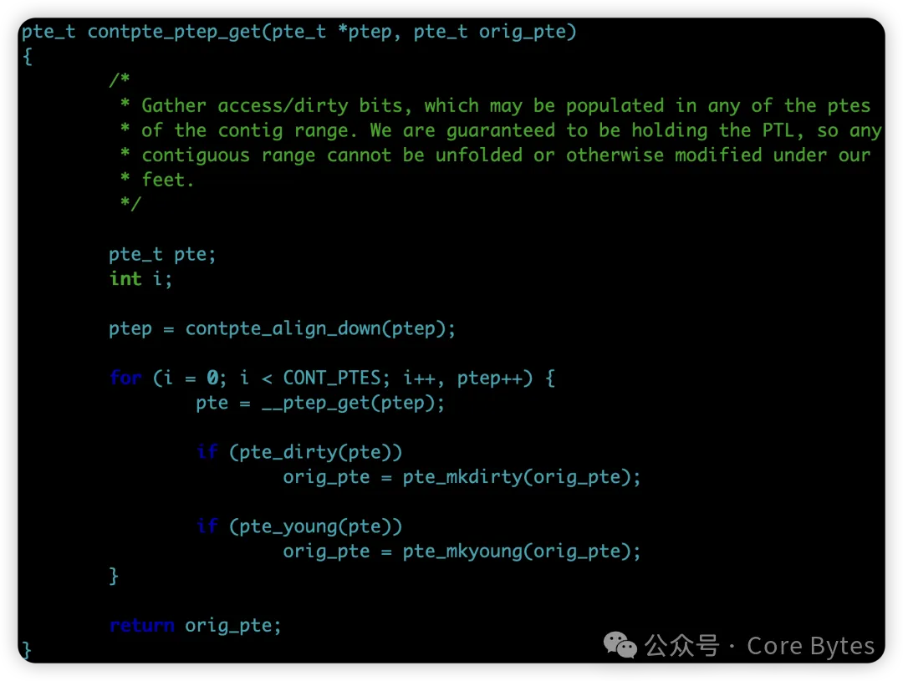
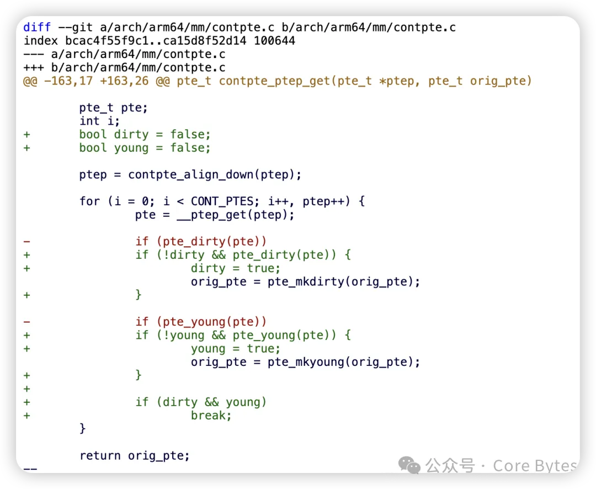
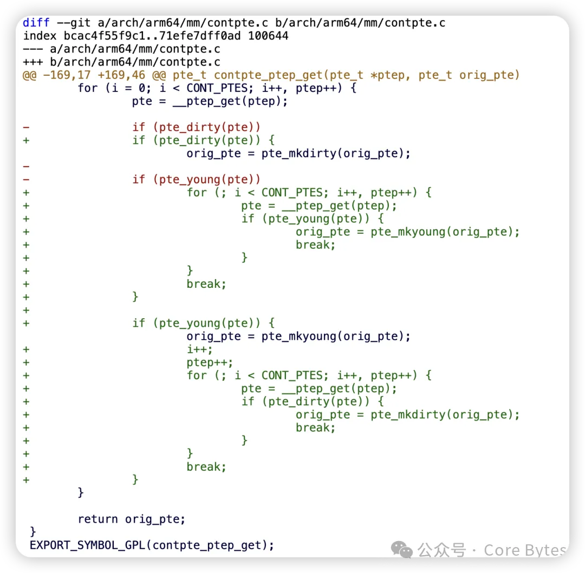
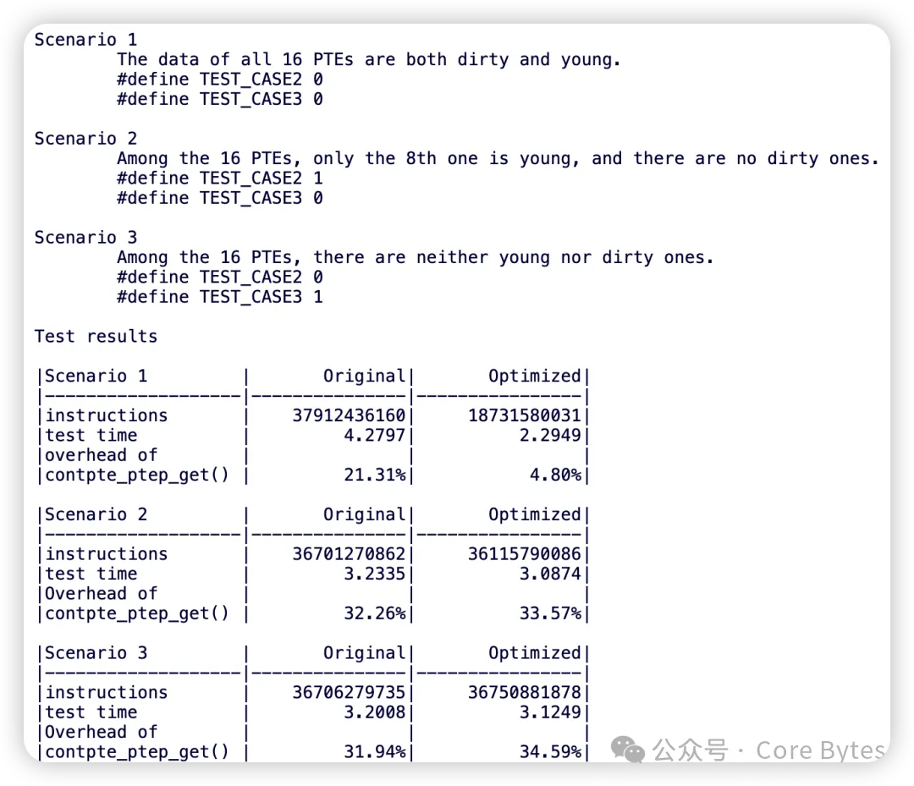
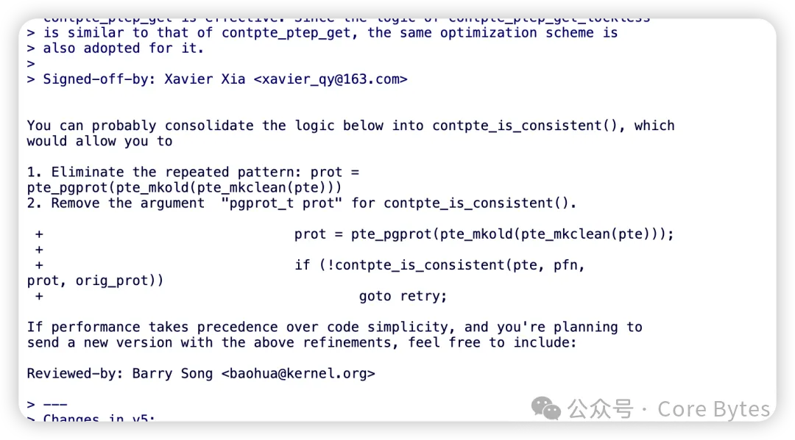
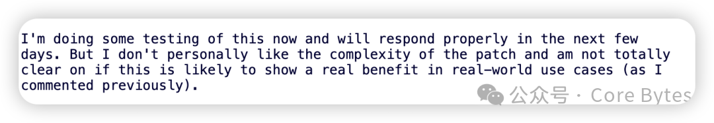
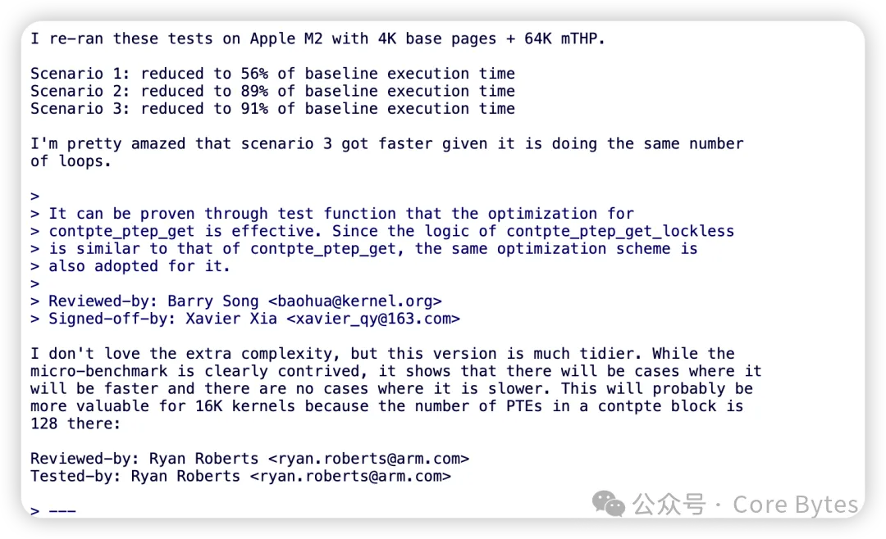

Xavier Xia写了一个惊悚的patch，来优化contpte_ptep_get()的性能。contpte_ptep_get()原先的样子是这样的：

它无论如何，都会扫描CONT_PTES个pte entries，来获得整个contpte对应folio的dirty和young状态。实际的确存在一个，可以提前检测到dirty和young后，break整个循环的可能性。
Xavier Xia最初的patch是这样的：

这个实际很难说在各种场景下都是一个优化，比如CONT_PTES个pte都是全young和全dirty的情况下，它肯定是一个优化。但是如果全部都不是young和dirty呢？那可能就是负优化。
Xavier在其后的几次迭代中，让代码逐步变地特别惊悚难读。这个时候，人们有点失去耐心了。因为，必须看到这个patch，在各种场景下都有优化、以及没有regression。比如：
1. 全部都是young和dirty；
2. 全部都不是young和dirty；
3. 都不是dirty但是中间有一个pte是young。
几乎没有人看好这个patch的前途,但是Xavier童鞋没有放弃，他坚持不懈，继续优化，直到变成了这个样子：

Xavier童鞋并用数据证明，各种场景下都有优化、最恶劣的场景也无恶化：

笔者在Xavier的v5 patch中，首次给出了对这个patch的力挺【1】：

在Xavier随后发出v6后，人们仍然担心引入的复杂度是否值得，Ryan Roberts提到：

直到Ryan亲自测试和复现出极好的数据：

在与Ryan多个patchset的合作中，笔者一直欣赏Ryan的胸怀坦荡。
至此，我们几乎可以肯定，Xavier终究凭着坚定的信念与扎实的数据，说服了社区。这或许只是他编程旅程中的一小步，却是他人生中意义重大的一步。自此以后，他定会更加笃信：哪怕身处质疑之中，只要朝着真理前行，终会为人理解和认可。
我们始终坚信：面对质疑，对真理的追求不该停下脚步。因为，数据会反转局面，消解所有曾经的怀疑。
当下无论我们经历了什么，时间终会给出答案。眼前看似错误的，未必真是错的；看似正确的，也未必经得起时间考验。金玉抑或瓦砾，终须时间裁定。
【1】
https://lore.kernel.org/all/CAGsJ\_4wq0HD=Q-URO766zz=M8yyUxauhRoF9CTDkAgE5Favg-A@mail.gmail.com/
【2】
https://lore.kernel.org/all/99a0a2c8-d98e-4c81-9207-c55c72c00872@arm.com/
This is copyright.